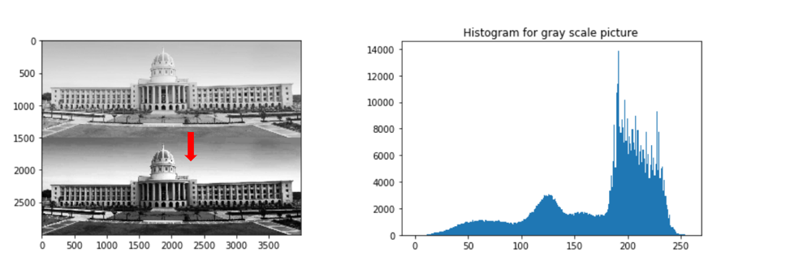

<!DOCTYPE html>
<html>
<head>
    <meta name="viewport" content="width=device-width, initial-scale=1.0">
    <meta charset="UTF-8">
	<title>Digital Image Processing Real Time Applications</title>
	<link rel="stylesheet" type="text/css" href="style.css">
</head>
<body>
    <header>
        <a href="#" class="logo">Digital Image Processing Real Time Application</a>
        <div class="toggle"></div>
        <ul>
            <li><a href="https://www.javatpoint.com/applications-of-digital-image-processing">Home</a></li>
            <li><a href=""https://github.com/Dsc-coea">DSC-Coea</a></li>
            <li><a href=" https://www.tutorialspoint.com/dip/index.htm">About us</a></li>
            
        </ul>
    </header>
    <section class="banner">
        <div class="textBx">
            <h2>Digital Image Processing Real Time Application<br></h2>
            
            <a href="https://www.tutorialspoint.com/dip/index.htm" class="btn">About Us</a>
            
        </div>
    </section>
    <br>
    <section class="about">
        <div class="heading">
            <h2>Introduction</h2>
        </div>
        <div class="content">
            <div class="contentBx">
                <p>Digital image processing deals with manipulation of digital images through a digital computer. It is a subfield of signals and systems but focus particularly on images. DIP focuses on developing a computer system that is able to perform processing on an image. The input of that system is a digital image and the system process that image using efficient algorithms, and gives an image as an output.
                     The most common example is Adobe Photoshop. It is one of the widely used application for processing digital images.
                </p>
                <a href="https://www.tutorialspoint.com/dip/index.htm" class="btn">Read More</a>
            </div>
            
            <div class="w50">
                
            </div>
        </div>
    </section><br><br>
    <section class="services">
        <div class="content"><br>
            <div class="servicesBx">
                <h2>Fundamental steps in digital image processing
                </h2><br>
                
                <br>
                <h2>Image Acquisition</h2>
                <p>It is basically capturing an image.
                    
                    Generally, the image acquisition stage involves pre-processing, such as scaling, etc.
                </p>
                <a href="https://medium.com/futframe-ai/fundamental-steps-of-digital-image-processing-d7518d6bb23c" class="btn">Read More</a>
            </div>
        </div>
        <div class="content">
            <div class="servicesBx">
                
                <h2>Image Enhancement
                </h2>
                <p>It is the process of filtering image(removing noise, increasing contrast, etc) to improve the quality.

                    The resulting image will be more suitable than the original image
                </p>
                <a href="https://medium.com/futframe-ai/fundamental-steps-of-digital-image-processing-d7518d6bb23c" class="btn">Read More</a>
            </div>
        </div>
        </div>
        <div class="content">
            <div class="servicesBx">
                
                <h2>Image Restoration  </h2>
                <p>
                    It is the process of improving appearance (reducing blurring etc) of an image by mathematical or probabilistic models

                </p>
                <a href="https://medium.com/futframe-ai/fundamental-steps-of-digital-image-processing-d7518d6bb23c" class="btn">Read More</a>
            </div>
        </div>
        </div>
        <div class="content">
            <div class="servicesBx">
                
                <h2>Color Image Processing
                </h2>
                <p>It has become more popular since the use of the digital image has increased.

                </p>
                <a href="https://medium.com/futframe-ai/fundamental-steps-of-digital-image-processing-d7518d6bb23c" class="btn">Read More</a>
            </div>
        </div>
        </div>
        <div class="content">
            <div class="servicesBx">
                
                <h2>Multi-Resolution Processing
                </h2>
                <p>It is the process of representing images in various degrees of resolution
                </p>
                <a href="https://medium.com/futframe-ai/fundamental-steps-of-digital-image-processing-d7518d6bb23c" class="btn">Read More</a>
            </div>
        </div>
        </div>
        <div class="content">
            <div class="servicesBx">
                
                <h2>
                    Compression
                </h2>
                <p>It involves the techniques for reducing the size of the image with minimum deterioration in its quality.

                </p>
                <a href="https://medium.com/futframe-ai/fundamental-steps-of-digital-image-processing-d7518d6bb23c" class="btn">Read More</a>
            </div>
        </div>
        </div>
        <div class="content">
            <div class="servicesBx">
                
                <h2>
                    Morphological Processing

                </h2>
                <p>It is the process for extracting image components that are useful in the representation and description of shape.
                 </p>
                <a href="https://medium.com/futframe-ai/fundamental-steps-of-digital-image-processing-d7518d6bb23c" class="btn">Read More</a>
            </div>
        </div>
        </div>
        <div class="content">
            <div class="servicesBx">
                
                <h2>   Segmentation </h2>
                <p>It is the process of partitioning the image into multiple segments.
                 </p>
                <a href="https://medium.com/futframe-ai/fundamental-steps-of-digital-image-processing-d7518d6bb23c" class="btn">Read More</a>
            </div>
        </div>
        </div>
        <div class="content">
            <div class="servicesBx">
                
                <h2>   Representation and Description
                </h2>
                <p>It involves representing an image in various forms:<br>
                    Boundary Representation — It focuses on the external shape characteristics such as corners and inflections.<br>
                    Regional Representation — It focuses on internal properties such as texture and skeletal shape.<br>
                    
                 </p>
                <a href="https://medium.com/futframe-ai/fundamental-steps-of-digital-image-processing-d7518d6bb23c" class="btn">Read More</a>
            </div>
        </div>
        </div>

    </section><br><br>
    <section class="testimonial">
        <div class="heading">
            <h2>More Info About Intel</h2>
        </div>
        <div class="content">
            <div class="testimonialBx">
                <h2>Applications
                </h2><br>
                <p><li>Image sharpening and restoration</li><br>

                   <li> Medical field</li><br>
                    
                   <li>Remote sensing</li><br>
                    
                    <li>Machine/Robot vision</li><br>
                    
                    <li>Color processing</li><br>
                    
                    <li>Pattern recognition</li><br>
                 
                    <li>Video processing</li><br>
                    
                    </p>
                     <a href="#" class="btn">Read More &#9755;</a>
                    </div>
            
            <div class="testimonialBx">
                <h2>Medical field </h2><br>
                    <p>The common applications of DIP in the field of medical is<br><br>

                      <li> Gamma ray imaging</li><br>
                        
                      <li>  PET scan</li><br>
                        
                       <li> X Ray Imaging</li><br>
                        
                       <li> Medical CT</li><br>
                        
                       <li> UV imaging</li><br>
                        </p>
                        <br>
                        <h2>UV imaging/Remote sensing
                        </h2><br>
                        <p>In the field of remote sensing ,<br>

                            the area of the earth is scanned by a satellite or from a very high ground and then it is analyzed to<br>
                             obtain information about it.
                            
                           One particular application of digital image processing in the field of remote sensing is<br>
                            to detect infrastructure damages caused by an earthquake.
                           </p>
                           <h2>An Example Of Remote sensing
                        </h2><br><br>
                        
           
            </div>
            <div class="testimonialBx">
                <h2> Machine/Robot vision
                </h2><br>
                <p>
                    Robot Vision involves using a combination of camera hardware <br>and computer algorithms to allow robots to process 
                    visual<br> data from the world.
                   
                   Increase the vision of robot <br>
                   
                    Make robot able to see things , identify them , identify the hurdles e.t.c.<br>
                    Much work has been contributed by this field and a complete other field <br>of computer vision has been 
                    introduced to work on it.
                   </p><br>
                   <h2>Hurdle detection
                </h2><br>
                
                <p>Hurdle detection is one of the common task that has been done<br> through image processing

                    by identifying different type of objects in the<br> image and then calculating the distance between robot and hurdles.<br>
                   </p><br>
                   <br>
                   <h2>Line follower robot
                </h2><br>
                <p>
                    Most of the robots today work by following the line and thus are <br>called line follower robots.
                     This help a robot to move on its path <br>and perform some    tasks.
                     This has also been achieved through<br> image processing.<br>
                    </p><br>
                    
            </div>
            <div class="testimonialBx">
                <h2>Color Image Processing
                </h2><br>
                <p>Color processing includes processing of colored images and different color spaces<br> that are used. 
                    For example RGB color model , YCbCr, HSV. It also involves studying transmission , <br>storage , and 
                    encoding of these color images.</p><br>

                    <h2>Pattern recognition 
                    </h2><br>
                    <p>Pattern recognition involves study from image processing and from various other fields<br> that includes
                         machine learning ( a branch of artificial intelligence). In pattern recognition ,<br> image processing is
                          used for identifying the objects in an images and then machine learning is used to <br>train the system for
                           the change in pattern. <br>Pattern recognition is used in computer aided diagnosis , recognition of handwriting ,<br>
                            recognition of images e.t.c</p><br>
                            <h2>  Video processing
                            </h2><br>
                        <p>A video is nothing but just the very fast movement of pictures.<br>

                            Video processing involves:<br><br>
                            
                             <li>noise reduction </li>
                             <li>detail enhancement </li>
                             <li>motion detection </li>
                             <li>frame rate conversion </li>
                             <li>aspect ratio conversion </li>
                            <li>Space color conversion </li>
                            </p>                            
            </div>
                <div class="testimonialBx">

                <h2>Advantages 
                </h2><br>
                <p>The processing of images is faster.<br>

                    One needs less time for processing, as well as less film and other photographing equipment. <br>
                   
                   It is more ecological to process images.<br>
                   
                    No processing or fixing chemicals are needed to take and process digital images.<br>
                   
                   
                </p>
                     <a href="https://www.ipl.org/essay/Advantages-And-Disadvantages-Of-Digital-Image-Processing-P3UQZG74SJPR" class="btn">Read More &#9755;</a>
            </div>
            <div class="testimonialBx">
                <h2>Disadvantages
                </h2><br>
                <p>The  initial cost can be high depending on the system used<br>

                    Misuse of copyright<br>
                    
                    Digital cameras which are used for digital image processing have some disadvantages like:<br>
                    
                    Memory card problem<br>
                    Higher cost<br>
                    Battery consumption<br>
                    
                </p>
                     <a href="https://www.ipl.org/essay/Advantages-And-Disadvantages-Of-Digital-Image-Processing-P3UQZG74SJPR" class="btn">Read More &#9755;</a>
            </div>
            <div class="testimonialBx">
                <h2>Conclusion
                </h2><br>
        <p>The feature of good introductory images processing program. There are many more complex modifications you can make to the images

            The outcome of process can be either image or set of representative characteristics or properties of  original image
            </p>
                     
            </div>
        </div>
    </section>
    <footer class="footer-distributed">

        <div class="footer-left">
     
        <h3>About<span>Us</span></h3>
     
        <p class="footer-links">
           codesyouth is platform used for Multinational company <br>recruitment process and
           brief history about that and also <br>about seminar topic for computer science
           student.Codesyouth <br>is a project developing under Developer student club.
        </p><br><br>
     
        <p class="footer-company-name"> Copyright &copy; Codesyouth 2021. All rights reserved.</p>
        </div>
     
        <div class="footer-center">
     
        <div>
        <i class="fa fa-map-marker"></i>
        <h3>Projects</h3><br>
                     <div class="border"></div>
                     <ul>
                        <a href="#">Mahindra Company</a>
                        <br>
                        <a href="https://sneha1295.github.io/SamsungCompany.github.io/">Samsung Company</a>
                         <br>
                         <a href="#">Snapdeal Company</a>
                         <br>
                         <a href="https://rohini864.github.io/wipro-company.github.io/">Wipro Company</a>
                        <br>
                        <a href="#">Dell Company</a>
                        <br>
                        <a href="#">TCS Company</a>
                        <br>
                        <a href="https://pallavi2000-spce.github.io/Datamining1.io/">Data mining</a>
                        <br>
                        <a href="https://shindepallavi1809.github.io/Computer-Hacking.github.io/">Hacking</a>
                     </ul>
        </div>
     
     
        </div>
     
        <div class="footer-right">
     
        <p class="footer-company-about">
        <span>Contact Us</span>
     
        </p>
     
        <div class="footer-icons">
           <a href="https://www.linkedin.com/company/devloper-student-club-coea/?viewAsMember=true"></a>
           <a href = "https://www.instagram.com/dsc_coea/?igshid=1d433b9abwk2q"></a>
           <a href = "https://github.com/Dsc-coea"></a>
           <a href = "https://mobile.twitter.com/CoeaDsc"></a>
           <a href = "https://www.youtube.com/watch?v=R_iJzDBiK60&feature=youtu.be"></a>
        </div>
     
        </div>
     
        </footer>
</body>
